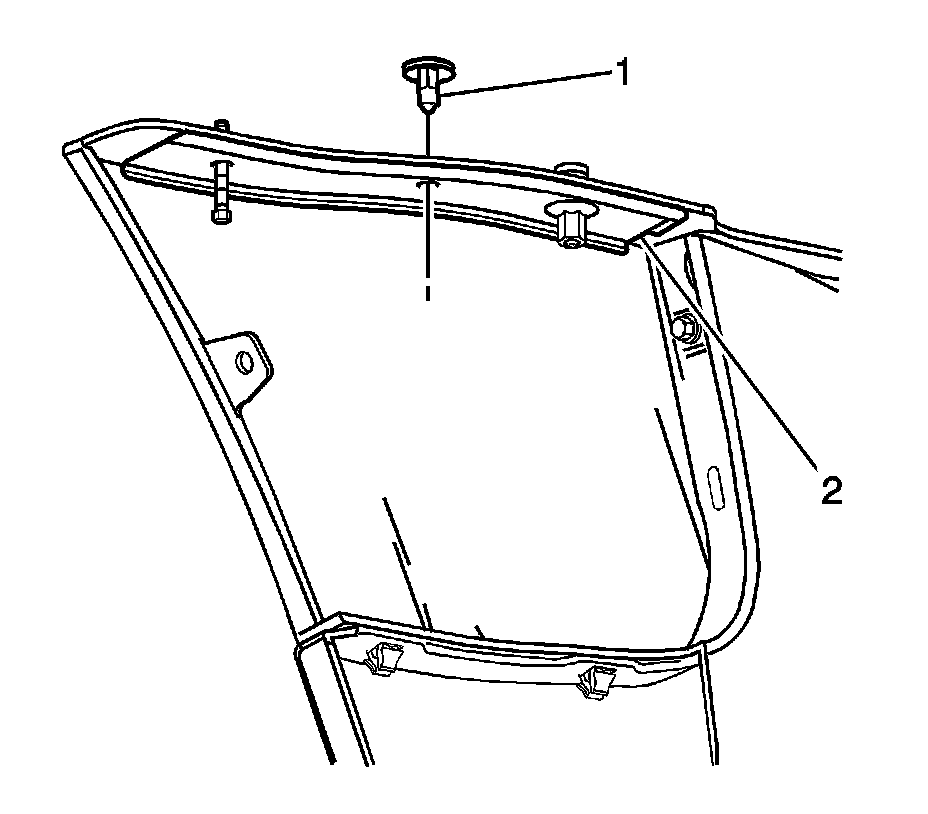

Front Bumper Fascia Reinforcement Replacement
Front Bumper Fascia Reinforcement Replacement
Removal Procedure
1.Remove the front fascia. Refer to Front Bumper Fascia Replacement Front Bumper Fascia Replacement .

2.Remove the push-in retainer (1) that secure the fascia reinforcement (2) to the fascia by cutting with diagonal cutters.
3.Remove the fascia reinforcement (2) from the fascia.
Installation Procedure
1.Position the reinforcement (2) to the fascia.
2.Install new push-in retainer (1) to secure the fascia reinforcement to the fascia.
3.Install the front fascia. Refer to Front Bumper Fascia Replacement Front Bumper Fascia Replacement .